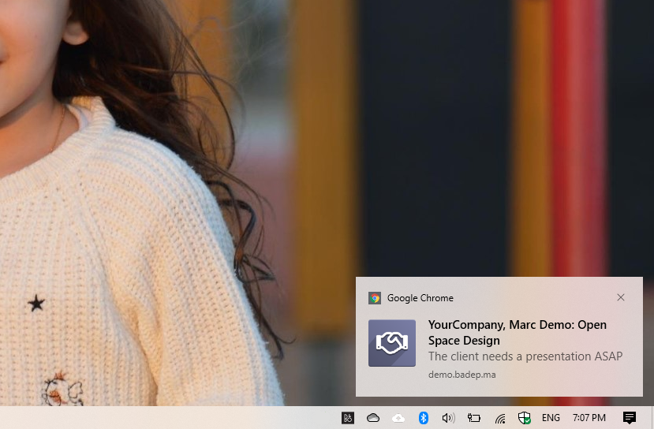

<section class="oe_container">
    <div class="oe_spaced">
        <h1 class="oe_slogan">Mail Push Notifications</h1>
        <h2 class="oe_slogan oe_mb32">Add push notifications for incoming messages</h2>
        <div class="oe_demo oe_screenshot">
            
        </div>
        <p>
            This module extends the native push notifications of Odoo to support all incoming messages instead of just chat messages.
        </p>
        <h3>Configuration</h3>
        <p>None</p>
        <h3>Usage</h3>
        <p>Each time a user receives an incoming message they will also receive a native notification for it. The user can also click on the notification to open the related document.</p>
        <h3>Limitation</h3>
        <p>This module uses the longpolling bus to send notifications and therefore needs an active session (open browser with connected user) in order to receive notifications. A background service worker like firebase can be used in the future to deliver push notifications even if there is no active session.</p>
    </div>
</section>
